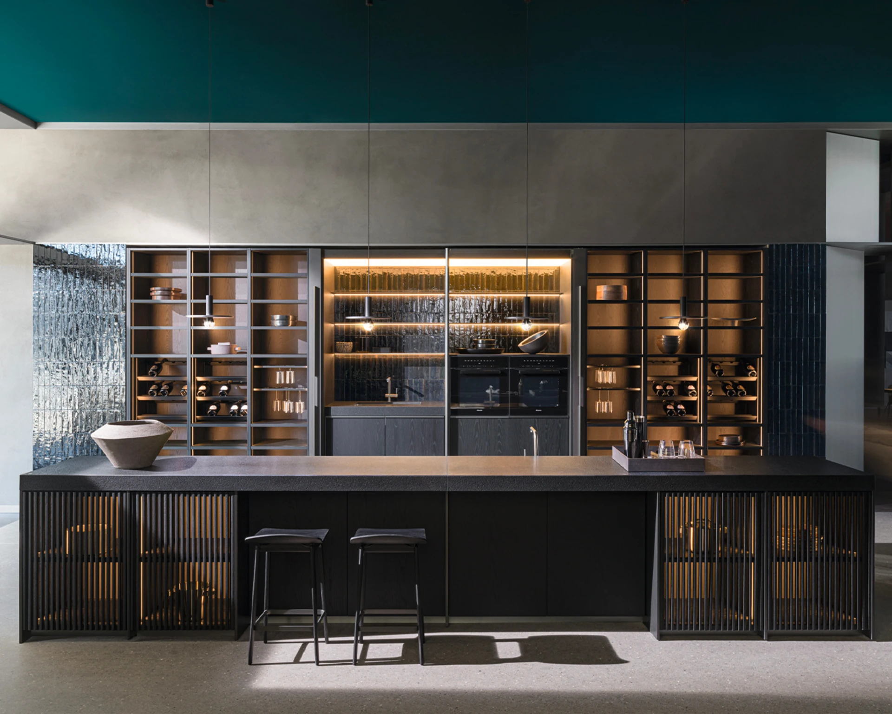
Ratio
Архитектурная система с запатентованной дверью толщиной 13 мм.
Ratio
Архитектурная система с запатентованной дверью толщиной 13 мм.
Дизайн: Vincent Van Duysen
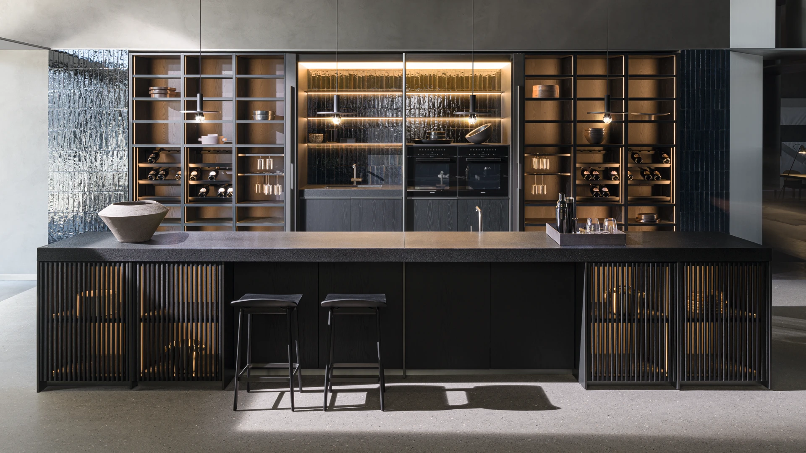
Кухня Ratio Vincent Van Duysen определяется точным архитектурным языком: пустые объёмы и массивные элементы объединены в выверенном балансе. Сверхтонкая дверь толщиной 13 мм и интегрированные профили-ручки формируют композицию, выражающую ясность, элегантность и структурную целостность.
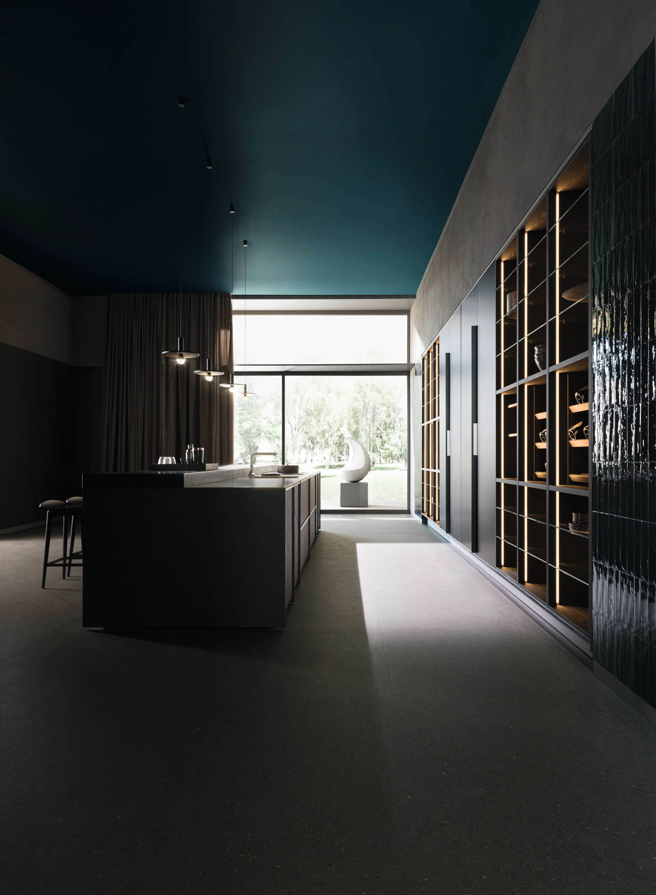
Контраст материалов и конструктивная детализация формируют систему, объединяющую широкий спектр благородных отделок. От центрального острова до вертикальных колонн — каждый элемент продуман так, чтобы организовать пространство, сохраняя единый визуальный порядок.
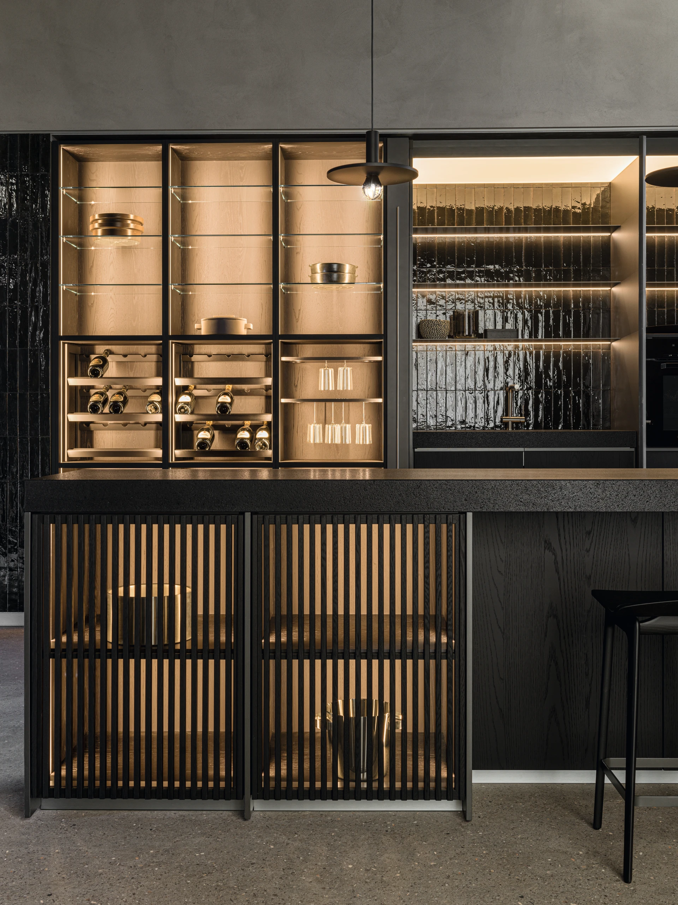
Кухня Ratio задумана как архитектурная система с точной игрой структуры и объёмов. Металлические направляющие определяют композицию, организуя навесные модули, колонны и аксессуары в единой логике. Эту структуру дополняют столешницы разной толщины — от сверхтонких до более массивных поверхностей — создавая контраст лёгкости и основательности.
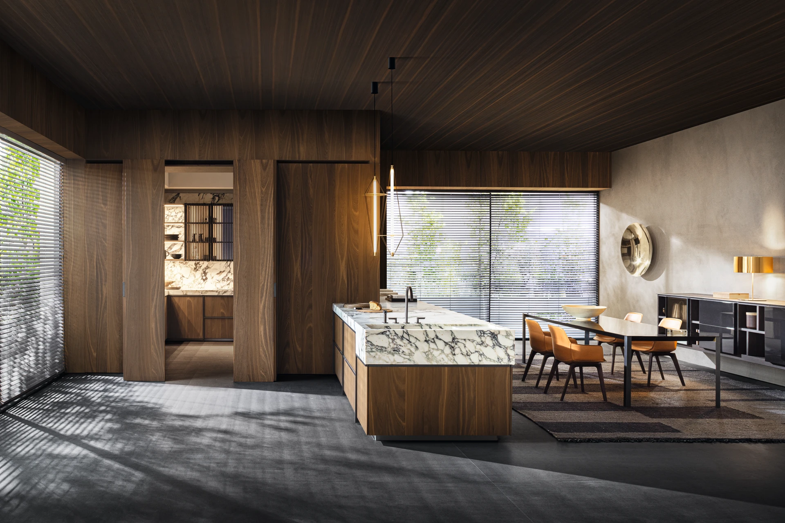
Запатентованная сверхтонкая дверь толщиной 13 мм — центральный элемент дизайна. Обрамлённая горизонтальными и вертикальными профилями, она определяет геометрию кухни, интегрируя решения для ручек в разных отделках. По всей композиции поверхности формируют сбалансированную материальную палитру, усиленную встроенным освещением, которое подчёркивает глубину и восприятие пространства.
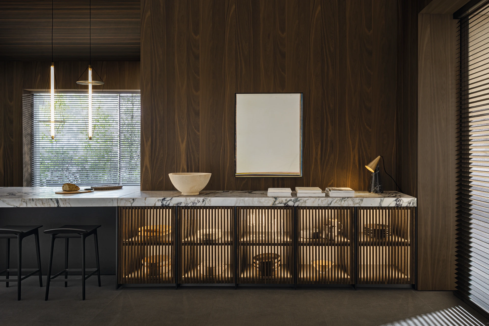
Ratio адаптируется под разные пространственные конфигурации благодаря системе из базовых модулей, технических колонн и открытых элементов. Островное решение с несущей структурой и сверхтонкими панелями объединяет функции готовки и мытья, включая фирменную мойку Ratio в разных отделках. Открытые колонны Atelier со стеклянными полками и встроенной подсветкой добавляют лёгкий вертикальный ритм, а технические колонны сочетают хранение и функциональность за счёт подсветки изнутри и выдвижных элементов (источник: molteni.it).
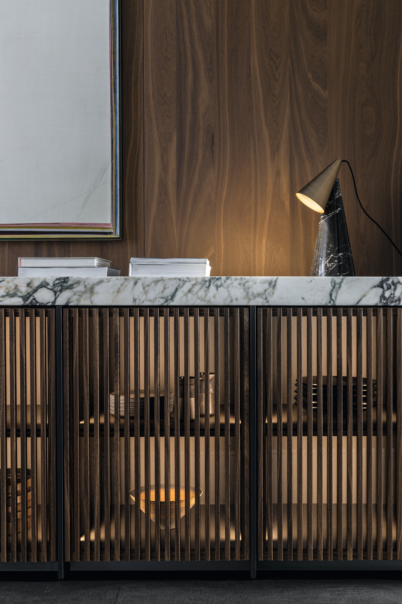
- Патент: сверхтонкая дверь толщиной 13 мм с интегрированным профилем-ручкой
- Открытые колонны Atelier со стеклянными полками и подсветкой
- Технические колонны с подсветкой изнутри и выдвижными элементами
- Фирменная мойка Ratio в нескольких вариантах отделки
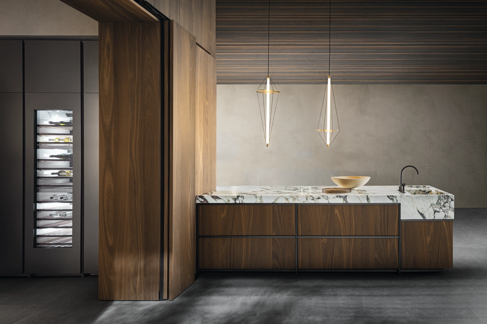
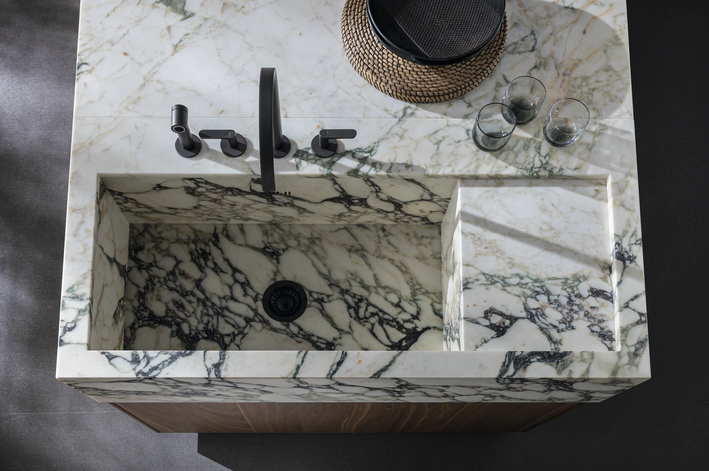
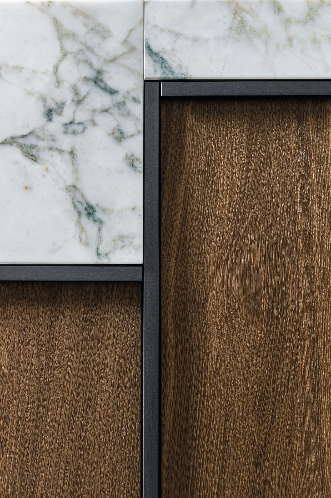
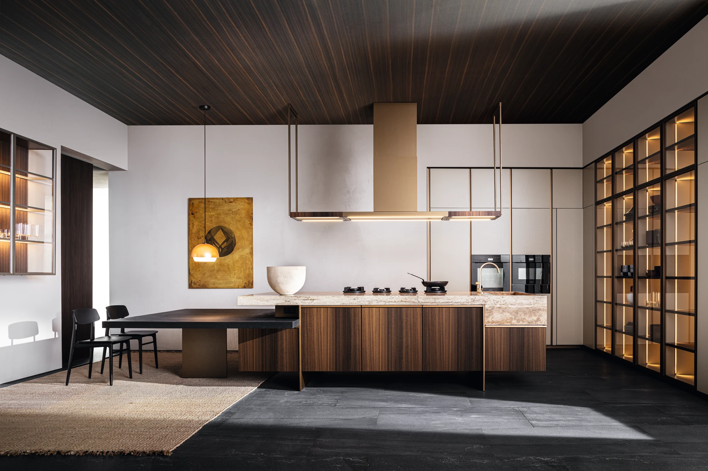
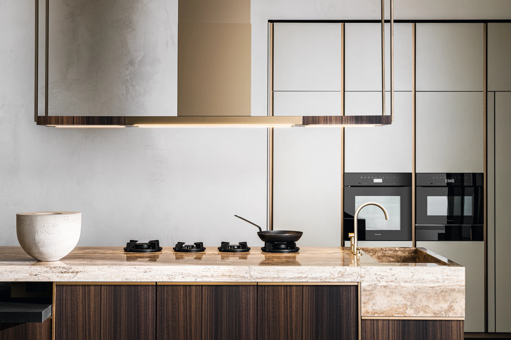
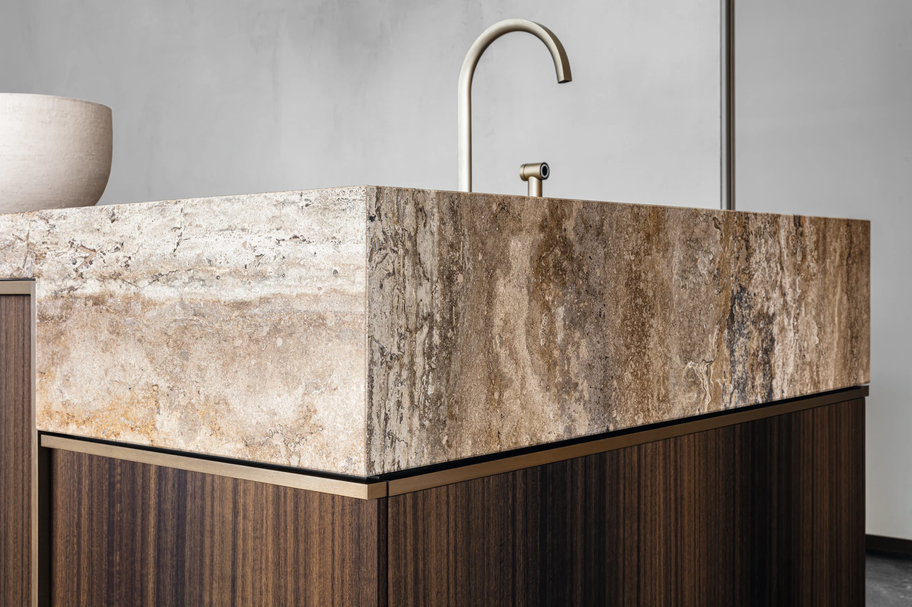
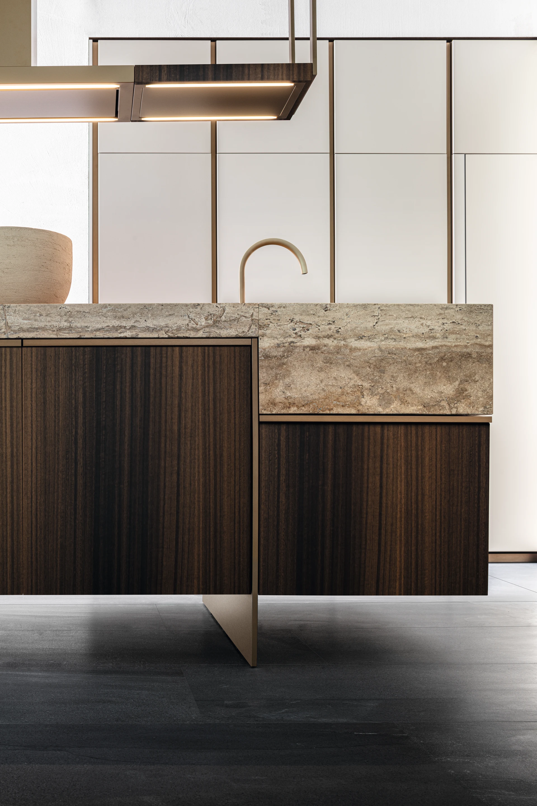
Vincent Van Duysen
Бельгийский архитектор, креативный директор Molteni&C с 2016 года. Известен строгим, почти монашеским минимализмом и вниманием к материалам в их естественном, необработанном выражении.
Обсудить проект
из коллекции Ratio
Персональная консультация по конфигурации и материалам.